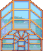
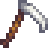
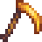
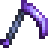
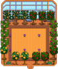
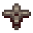
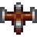
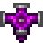
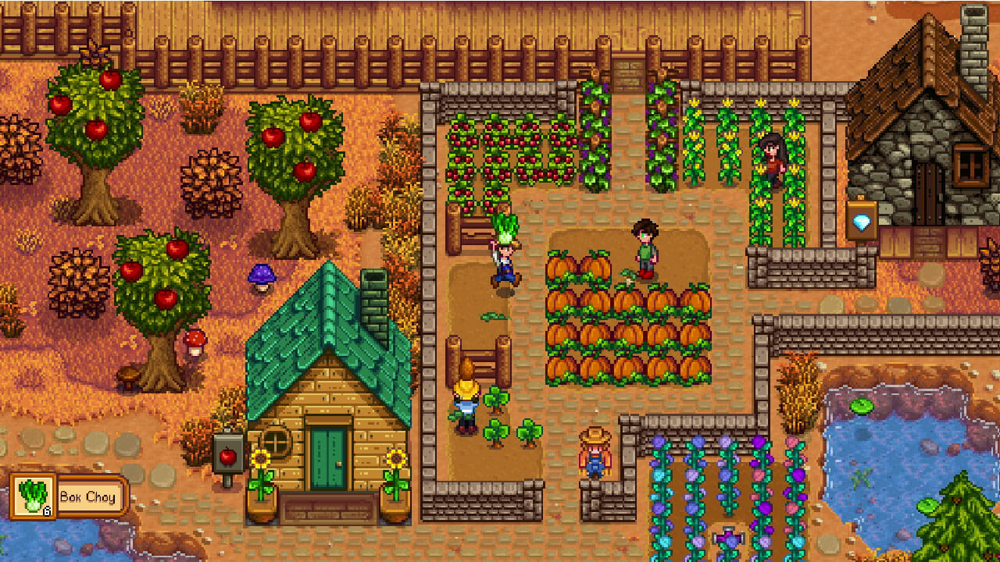

A filosofia do Diário DEV: Documentação como ativo profissional
O Diário DEV, vai além da simples prática de anotações; ele se configura como uma estratégia de engenharia cognitiva destinada a mostrar a transição de um estudante de programação para um profissional na área.
A estruturação desta plataforma reflete a "Tríade do Frontend" — HTML, CSS e JavaScript — estabelecendo conexões profundas entre a estrutura, a apresentação e a lógica comportamental. O Diário aborda a tipologia de arquivos, a anatomia do documento HTML, o modelo de caixas e a arquitetura semântica, integrando esses conceitos a uma visão de longo prazo para a carreira de desenvolvedor.
O propósito fundamental do Diário DEV é mitigar o fenômeno do "conhecimento raso". Ao transformar o aprendizado em uma narrativa, o autor do blog utiliza a técnica de aprendizado por explicação, o que garante que o conhecimento seja permanente. Além do benefício cognitivo, o blog atua como um portfólio vivo, demonstrando a capacidade analítica e a evolução técnica do desenvolvedor para potenciais recrutadores e para a comunidade.

Estrutura bruta
HTML5
Nível 1

- Estrutura do documento
- Estrutura do conteúdo
- Hierarquia de títulos e elementos textuais
Nível 2

- url, domínio e direitos e formatos de imagem
- Conexões
- Mídia
Nível 3

- Listas
- Tabela
- Formulario

Refino estético
CSS3
Nível 1

- Regras CSS
- Variáveis
- Seletores e pseudo-seletores
Nível 2

- Modelo de caixas
- Contornos
- Plano de fundo
Nível 3

- Media Query
- Flexbox
- Grid layout

Automatização
JavaScript
Nível 1

- JavaScript
- Variáveis
- Tipos primitivos
Nível 2

- Formatação de Number e formatação de String
- Operadores
- Condições
Nível 3

- Eventos DOM
- Laços
A mente por trás do Diário: Biografia, trajetória e propósito
Me chamo Oderlândio, nasci em Teixeira de Freitas e atualmente moro em Caraíva com minha esposa, tenho 24 anos e estou estudando para ser um desenvolvedor WEB.
Desde sempre gostei do mundo da informática e de alguns jogos. Um dia, um amigo me chamou para jogar Stardew Valley e, por um tempo, achei aquele "joguinho de fazenda pixelado" meio paia, até ele me convencer a jogar, mostrando a fazenda dele, modificações através programas, o que ele fez e iria fazer no jogo, foi então que eu comecei a jogar "aquilo".

Na época, como não sabia jogar direito e os tutoriais que eu via de alguma forma não se conectava com a minha necessidade, não levei muito a sério, tanto que eu criava uma fazenda nova, apagava e começava outra do zero por motivos de acontecimentos não sincronizados com os tutoriais.
Quase sempre ele me perguntava:
- Como está sua fazenda?
e eu respondia:
- Apaguei e tô com uma nova
Uma vez, ele me mostrou que dava pra aumentar o ouro alterando o arquivo do jogo, igual a uma trapaça (PS: ELE DEIXOU CLARO QUE RARAMENTE USAVA, e acredito eu, que foi uma tentativa "recuperar" o progresso das outras fazendas deletadas e me convencer a jogar sério) porém, ao me mostrar o arquivo interno do jogo com aquela quantidade de linhas de código e informações, comecei a achar aquele jogo um pouco mais interessante e somando com a jogabilidade, que eu finalmente entendi como funcionava, me fizeram viciar nesse "joguinho de fazenda pixelado".
O fato é que, aquelas linhas de código existe em tudo que é clicável e foi mexendo e pesquisando sobre as do jogo, que me veio a vontade de conhecer e entender o que era e como tudo aquilo funcionava individualmente.
Em março de 2024, comecei a estudar programação web através do CursoemVídeo, pois criação, desenvolvimento e design, sempre estiveram coligadas a mim levando em consideração o propósito do Stardew Valley, mas foi só em outubro de 2024 que eu levei a sério os estudos e acompanhar o curso mais atualizado do canal do professor Gustavo Guanabara.
Quando comecei a acompanhar as aulas do professor e elaborar os estudos, me desafiei a criar um site, mesmo ainda não sabendo nada, com objetivo de documentar tudo o que eu aprendi durante todo o tempo que eu passei assistindo, anotando e fazendo os exercícios que ele passava além de alguns que eu fazia sozinho. Sendo assim, hoje, consigo mostrar à mim mesmo, o que eu aprendi acompanhando fielmente os ensinamentos do Gustavo Guanabara.